A simple observation operator example, running in eoldas¶
Purpose of this section¶
This section of the user guide will take a simple example of combining two cost functions in a variational DA sense: an Identity (or Prior) operator and a smoothness (derivative) constraint. The examples used here are of filtering noisy time series of NDVI data.
As well as learning about these concepts if you are unfamiliar with them, this section will also take you through some examples of running the eoldas to solve this sort of problem. Towards the end of the section, we delve into writing some python code to make use of eoldas, and also mention other ways of interacting with it.
We learn that at the heart of eoldas is one or more configuration files that allow us to solve problems without the need for any code writing (though you can if you want to!).
Introducing the observation operator concept¶
In the previous sections, we have assumed that the state of the land surface can be observed directly, and that these observations are only limited by noise in their acquisition. In general, the state of the surface and the observations will be different entities. For example, the state of the surface may include parameters such as leaf area index, chlorophyll concentration or soil moisture, whereas the observations may be of directional surface reflectance, top of atmosphere radiance or microwave temperatures. The link between these magnitudes is the observation operator, which maps the land surface parameters into quantities that are measured by a sensor. Many types of observation operator are available: from the statistical to the physics based. The simplest case, however, is the identity operator. In fact, we have already used it, as we have assumed that the observations are just direct measurements of the state vector.
A simple data assimilation example using an identity observation operator¶
The simplest observation operator is the identity observation operator, where the observations are identical to the state vector components. We can see the use of this operator as a way of optimally smoothing univariate timeseries, for example NDVI. Additionally, the use of a DA system allows to interpolate where data points are not available. The following demonstrates how the EOLDAS prototype can be used for this task, and also allows us to explore the use of the weak assimilation paradigm conveniently.
The main way to run EOLDAS is via one or more configuration files. This is partly to make sure that a record exists of a particular experimental setup and partly to allow flexible running of the system without the need for further coiding by the user (unless he/she wants to add new classes or methods).
<<<<<<< HEADHere is the start of the configuration file that we are ======= <<<<<<< HEAD
Here is the start of the configuration file that we are =======
Here is the start of the configuration file that we are >>>>>>> ce76b11e7d7c668d4c215d915da12acce164f84b >>>>>>> 3a432b04f6092097d0eb5bd053d645c54dd0114e going to use:
# An EOLDAS confioguration file for
# a simple Identity operator and a regulariser
[parameter]
location = ['time']
limits = [[1,365,1]]
names = gamma_time,NDVI
solve = 0,1
datatypes = x
[parameter.result]
filename = output/Identity/NDVI_Identity.params
format = 'PARAMETERS'
help_filename='Set the output state filename'
[parameter.x]
datatype = x
names = $parameter.names
default = 200,0
help_default="Set the default values of the states"
apply_grid = True
sd = [1.]*len($parameter.names)
bounds = [[0.000001,1000000],[-1,1]]
This sets up the section [parameter], which described the state variables within EOLDAS.
The section must contain fields describing the locational information of the data to be used as well as the names of the state variables we will consider. In this case, we have two state variables gamma_time and NDVI that we wish to estimate over the (time) range 1 to 365 (inclusive) in steps of 1 (day).
The subsection parameter.solve gives a list of codes indicating whether we wish to solve for each parameter or not.
A code of 0 tells the EOLDAS not to solve, i.e. just to use the data that are read in or any other default values.
A code of 1 tells EOLDAS to solve for that state variable at all locations (times here).
A code of 2 tells EOLDAS to solve for the state variable, but to maintain a single value over all locations.
The section parameter.result gives information on any output file name and format for the state.
Finally in this section, the field parameter.x sets up data and conditions for the state vector x. Remember that it is this state vector x that we will solve for in the EOLDAS. Here, we specify that it is of datatype x (i.e. the x state vector), that it has the same names as we set up in parameter.names, that default values to be assigned are 25 and 0 for the two variables respectively. If any data are read in, these override the default values, but in this case, we simply start with the defaults.
The text help_default allows the field parameter.x.default to be set from the command line with the option --parameter.x.default=a,b.
The flag apply_grid, which is the default, tells the EOLDAS to produce the state vector on a grid over the bounds defined in parameter.limits.
Finally, we define default uncertainty information for the state vector (this does not directly affect the running of the EOLDAS (parameter.x.sd), and define the bounds for each state vector (use None if no bound is to be used). Here, we set the lower bound as 0 and the upper bound as 1 for both parameters.
The next section sets up general conditions:
[general]
doplot=True
help_do_plot='do plotting'
In this case, we set a flag to do plotting when the results are written out. Plotting will use the filenames in any state variable section e.g. parameter.result.filename to generate a series of plots with filenames the same as this data filename. We will see some examples later.
The next section sets up the operators that we want to define here.
[operator]
modelt.name=DModel_Operator
modelt.datatypes = x
obs.name=Operator
obs.datatypes = x,y
Here, we define two operators, DModel_Operator and Operator. These names refer directly to python classes for the operators in EOLDAS. The base class is ‘Operator’ which implements the Identity operator. All other classes are derived from this. The differential operator works only on the x state vector, which is equlivalent to defining 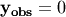. The operator ‘Operator’ access both x and y data if it to act as a Prior constraint, so we set up x and y datatypes.
Next we set the details of these operators. First, the differential operator:
[operator.modelt.x]
names = $parameter.names
sd = [1.0]*len($operator.modelt.x.names)
datatype = x
[operator.modelt.rt_model]
model_order=1
help_model_order='The differential model order'
wraparound=periodic,365
where we specify which state vector elements this operator has access to (all of those in parameter.names here) and set up the default uncertainty and datatype.
We then set the parameters specific to the ‘model’ 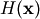, in this case the order of the differential model (2 here) and the edge conditions (periodic, with a period of 200 (days)).
Finally, we set up the operator operator.obs, specifically, parameters for its x and y state vectors.
[operator.obs.x]
names = $parameter.names[1:]
sd = [1.0]*len($operator.obs.x.names)
help_sd='Set the observation sd'
datatype = x
[operator.obs.y]
control = [mask]
names = $parameter.names[1:]
sd = [0.15]*len($operator.obs.x.names)
help_sd="set the sd for the observations"
datatype = y
state = data/Identity/random_ndvi1.dat
help_state = "Set the y state vector"
[operator.obs.y.result]
filename = output/Identity/NDVI_fwd.params
specifying default uncertainty information, data types and any required output files. Here, we wish to write out the results in operator.obs.y, so we specify a filename for this. Again, we see the use of a ‘help’ variable, which here allows operator.obs.y.result.filename to be set from the command line. This interfacing to the command line means that a single configuration file can generally serve for multiple experiments and the user does not need to keep generating new ones.
The main program can be accessed in various ways. One way is to write some front end code that calls the eoldas python code.
<<<<<<< HEADAn example is solve_eoldas_identity.py that includes three sections:
======= <<<<<<< HEADAn example is solve_eoldas_identity.py that includes three sections:
=======An example is solve_eoldas_identity.py that includes three sections:
>>>>>>> ce76b11e7d7c668d4c215d915da12acce164f84b >>>>>>> 3a432b04f6092097d0eb5bd053d645c54dd0114eFirst, some code to generate a synthetic dataset.
import pdb
import numpy as np
def create_data ( n_per=4, noise=0.15, obs_off=0.33, \
window_size=0, order=4):
"""
Create synthetic "NDVI-like" data for a fictitious time series. We return
the original data, noisy data (using IID Gaussian noise), the QA flag as well
as the time axis.
Missing observations are simulated by drawing a random number between 0 and 1
and checking against obs_off.
Parameters
----------
n_per : integer
Observation periodicity. By default, assumes every 8 days
noise : float
The noise standard deviation. By default, 0.15
obs_off : float
The threshold to decide on missing observations in the time series.
window_size : integer, odd
window size for savitzky_golay filtering. A large window size will lead
to larger data gaps by correlating the noise. Set to zero by default
which applies no smoothing.
order : integer
order of the savitzky_golay filter. By default 4.
"""
from savitzky_golay import savitzky_golay
import numpy as np
doys = np.arange ( 1, 365+1, n_per)
ndvi_clean = np.clip(np.sin((doys-1)/72.), 0,1)
ndvi = np.clip(np.sin(doys/72.), 0,1)
# add Gaussian noise of sd noise
ndvi = np.random.normal(ndvi,noise,ndvi.shape[0])
# set the qa flags for each sample to 1 (good data)
qa_flag = np.ones_like ( ndvi).astype( np.int32 )
passer = np.random.rand( ndvi.shape[0])
if window_size >0:
# force odd
window_size = 2*(window_size/2)+1
passer = savitzky_golay(passer, window_size=window_size, order=order)
# assign a proportion of the qa to 0 from an ordering of the smoothed
# random numbers
qa_flag[np.argsort(passer)[:passer.size * obs_off]] = 0
return ( doys, ndvi_clean, ndvi, qa_flag )
Here, we generate some NDVI data which has a trajectory of a sine wave for the first half of the year and is flat at zero for the second half. The sampling is controlled by n_per and obs_off. The parameter obs_off randomly removes a proportion of the data. If window_size and order are set then a savitzky_golay filter is used to induce correlation in the timing of the samples that are removed from thie dataset (qa=0). This mimics what we practically have in Optical Earth Observation with temporal correlation in cloud cover.
The next section calculates the ‘ideal’ value of  by calculating the root mean
squared deviation of the original dataset. We use this ideal gamma here for to demonstrate the physical meaning
of the gamma value, though in practice this would be unknown. This section also writes the dataset to a temporary file
in ‘BRDF’ format.
by calculating the root mean
squared deviation of the original dataset. We use this ideal gamma here for to demonstrate the physical meaning
of the gamma value, though in practice this would be unknown. This section also writes the dataset to a temporary file
in ‘BRDF’ format.
All of this so far standard python coding, though such datasets could be generated in many other ways. The final section interfaces to the top level of the eoldas code, which is what is of immediate concern in this tutorial.
import sys,tempfile
this = sys.argv[0]
import eoldas
# SD of noise
noise=0.15
# nominal sampling period
n_per=7
# proportion of missing samples
obs_off=0.33
# order of differential model (integer)
model_order=1
# sgwindow is larger to create larger data gaps
sgwindow=10
# set up data for this experiment
file, ideal_gamma,doys,ndvi_clean,ndvi,qa_flag = \
prepare(noise=noise,n_per=n_per,\
obs_off=obs_off,model_order=model_order,\
sgwindow=sgwindow)
# set gamma to less than the the theoretical value
gamma = ideal_gamma*0.33
# set op file names
xfile = 'output/Identity/NDVI_Identity.params'
yfile = 'output/Identity/NDVI_fwd.params'
# initialise optuions for DA overriding any in config files
cmd = 'eoldas ' + \
' --conf=config_files/eoldas_config.conf --conf=config_files/Identity.conf ' + \
' --logfile=mylogs/Identity.log ' + \
' --calc_posterior_unc ' + \
' --parameter.solve=0,1 ' + \
' --parameter.result.filename=%s '%xfile +\
' --parameter.x.default=%f,0.0 '%(gamma) + \
' --operator.obs.y.result.filename=%s'%yfile +\
' --operator.obs.y.state=%s'%file+\
' --operator.modelt.rt_model.model_order=%d '%model_order
# initialise eoldas
self = eoldas.eoldas(cmd)
# solve DA
self.solve(write=True)
The first part of the code extends the system path for where it searches for libraries. This is done relative to where solve_eoldas_identity.py is (in the bin directory of the distribution). After that, we set up values for the parameters for generating the synthetic dataset.
The interface to the eoldas here is mainly to make a string with a number of flags. The most important flag is --conf=config_files/Identity.conf which specifies the configuration file for this experiment. In addition, --conf=eoldas_config.conf is given, which specifies a system default configuration file, eoldas_config.conf.
So, the simplest ‘top level’ interface to eoldas from python code involves:
gamma = ideal_gamma*0.33
# set op file names
xfile = 'output/Identity/NDVI_Identity.params'
yfile = 'output/Identity/NDVI_fwd.params'
# initialise optuions for DA overriding any in config files
cmd = 'eoldas ' + \
' --conf=config_files/eoldas_config.conf --conf=config_files/Identity.conf ' + \
' --logfile=mylogs/Identity.log ' + \
' --calc_posterior_unc ' + \
' --parameter.solve=0,1 ' + \
' --parameter.result.filename=%s '%xfile +\
' --parameter.x.default=%f,0.0 '%(gamma) + \
' --operator.obs.y.result.filename=%s'%yfile +\
' --operator.obs.y.state=%s'%file+\
' --operator.modelt.rt_model.model_order=%d '%model_order
and
' --operator.modelt.rt_model.model_order=%d '%model_order
# initialise eoldas
self = eoldas.eoldas(cmd)
# solve DA
self.solve(write=True)
where we set up the text string, initiate the eoldas object (eoldas.eoldas) and then call the eoldas.solve() method.
This command string is clearly of some importance. The flags --logfile=mylogs/Identity.log and --calc_posterior_unc correspond to items in the [general] section of the configuration file. Here, eoldas_config.conf contains the lines:
[general]
datadir = ., data
help_datadir ="Specify where the data and or conf files are"
here = os.getcwdu()
grid = True
is_spectral = True
calc_posterior_unc=False
help_calc_posterior_unc ="Switch to calculate the posterior uncertainty"
write_results=True
help_write_results="Flag to make eoldas write its results to files"
init_test=False
help_init_test="Flag to make eoldas run a test of the cost functions before proceeding with DA"
doplot=False
plotmod=100000000
plotmovie=False
[general.optimisation]
# These are the default values
iprint=1
gtol=1e-3
maxIter=1e4
maxFunEvals=2e4
plot=0
# see http://openopt.org/NLP#Box-bound_constrained
solverfn=scipy_lbfgsb
randomise=False
help_randomise='Randomise the starting point'
no_df = False
To understand how e.g the flag --calc_posterior_unc can be used we can look at:
calc_posterior_unc=False
help_calc_posterior_unc ="Switch to calculate the posterior uncertainty"
where we set the default value of the item (False) and also have a ‘help’ statement which allows this value to be overridden. You shouldn’t normally need to change things in the system configuration file eoldas_config.conf. This flag controls whether we calculate the posterior iuncertainty or not. The default is False because it can be quite computationally expensive and is often best done in a post processing step.
The flag --operator.obs.y.state=filename refers specifically to the section operator.obs.y.state of the configuration, which is something we have set up in Identity.conf with a ‘help’ field, so we can override the default value set in the configuration file.
[operator.obs.y]
control = [mask]
names = $parameter.names[1:]
sd = [0.15]*len($operator.obs.x.names)
help_sd="set the sd for the observations"
datatype = y
If we run solve_eoldas_identity.py, it sends logging information to mylogs/Identity.log and reports (to the stderr) the progress of the optimisation, ‘f’ being the total of all of the 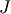 terms for this configuration. It should converge to a solution within some tens of iterations and result in a final value of of around 1800. We set the name of the logfile in solve_eoldas_identity.py:
if window_size >0:
There is a lot of detail in the log file about exactly what value terms are set to and the progress of the eoldas. It also contains information on the individual terms:
<<<<<<< HEAD ======= <<<<<<< HEAD >>>>>>> 3a432b04f6092097d0eb5bd053d645c54dd0114e2012-06-14 15:15:57,455 - eoldas.solver.eoldas.solver-obs-x - INFO - J = 293.213607
2012-06-14 15:15:57,456 - eoldas.solver.eoldas.solver-modelt-x - INFO - J = 34.354830
2012-06-14 15:15:57,457 - eoldas.solver.eoldas.solver-obs-x - INFO - J = 196.657803
2012-06-14 15:15:57,458 - eoldas.solver.eoldas.solver-modelt-x - INFO - J = 87.225910
2012-06-14 15:15:57,459 - eoldas.solver.eoldas.solver-obs-x - INFO - J = 112.026943
2012-06-14 15:15:57,461 - eoldas.solver.eoldas.solver-modelt-x - INFO - J = 113.479088
2012-06-14 15:15:57,462 - eoldas.solver.eoldas.solver-obs-x - INFO - J = 78.729997
2012-06-14 15:15:57,463 - eoldas.solver.eoldas.solver-modelt-x - INFO - J = 93.761052
2012-06-14 15:15:57,464 - eoldas.solver.eoldas.solver-obs-x - INFO - J = 43.172989
2012-06-14 15:15:57,466 - eoldas.solver.eoldas.solver-modelt-x - INFO - J = 99.078418
2012-06-14 15:15:57,467 - eoldas.solver.eoldas.solver-obs-x - INFO - J = 40.564246
2012-06-14 15:15:57,468 - eoldas.solver.eoldas.solver-modelt-x - INFO - J = 74.685441
2012-06-14 15:15:57,469 - eoldas.solver.eoldas.solver-obs-x - INFO - J = 39.829009
2012-06-14 15:15:57,470 - eoldas.solver.eoldas.solver-modelt-x - INFO - J = 63.881006
2012-06-14 15:15:57,471 - eoldas.solver.eoldas.solver-obs-x - INFO - J = 27.079490
A log file is important to the running of eoldas, as the processing can take quite some time for some problems.
The state vector results will be written to output/Identity/NDVI_Identity.params because we first specified this in Identity.conf:
[parameter.result]
filename = output/Identity/NDVI_Identity.params
format = 'PARAMETERS'
(actually, since we also set the comamnd ' --operator.obs.y.result.filename=%s'%yfile in the code we have written, this will override what is in the parameter file).
The output file format is a general ‘PARAMETERS’ format that should look something like this:
The first line of the file is a header statement that describes the location fields (‘time’ here) and state variables (gamma_time and NDVI here) and subsequent lines give the values for those fields. This format can be used for input data, but it cannot at present be used to define a full input covariance matrix, only the standard deviation for each observation as in this example.
A graph of the result is in output/Identity/NDVI_Identity.params.plot.x.png:
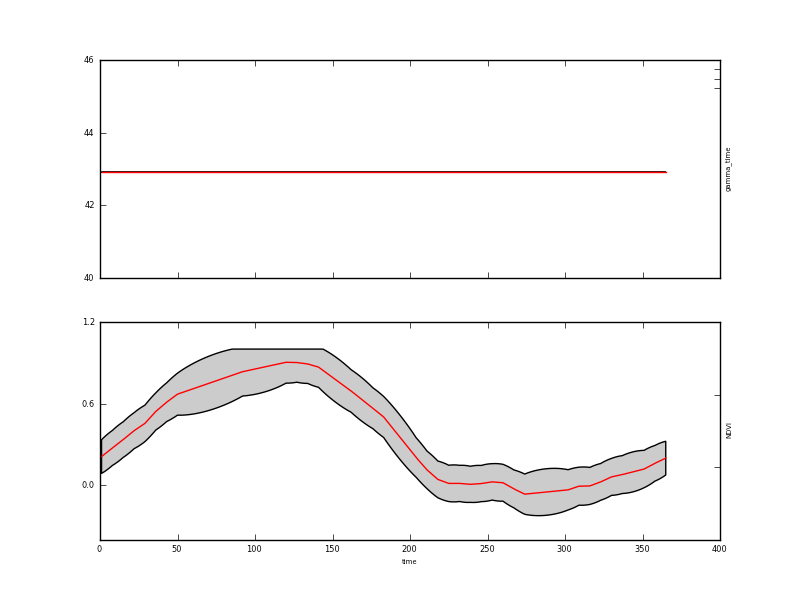This result is quite interesting for understanding how our DA system works: The plot shows the mean of the estimate of the NDVI state vector in the lower panel (the upper panel shows the value of gamma_time which we did not solve for) as a red line as we solve for the state every day (of 365 days). The 95% confidence interval is shown shaded in grey. We will show this below in a more refined plot of the results.
We also specified the ‘y’ data to be written out (in Identity.conf):
help_state = "Set the y state vector"
[operator.obs.y.result]
filename = output/Identity/NDVI_fwd.params
so this goes to a file output/Identity/NDVI_fwd.params unless the flag --operator.obs.y.result.filename=somethingElse.dat is used. The format of this file is the same as above, but it shows the retrieved NDVI data since this reports 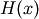.
#PARAMETERS time mask NDVI sd-NDVI
1.000000 1.000000 0.211816 0.000000
8.000000 1.000000 0.275085 0.000000
15.000000 1.000000 0.336462 0.000000
22.000000 1.000000 0.401630 0.000000
29.000000 1.000000 0.455163 0.000000
36.000000 1.000000 0.542784 0.000000
43.000000 1.000000 0.610468 0.000000
50.000000 1.000000 0.669554 0.000000
92.000000 1.000000 0.834135 0.000000
The original dataset is output form convenience in the same format as the y state, being output/Identity/NDVI_fwd.params_orig here:
#PARAMETERS time mask NDVI sd-NDVI
1.000000 1.000000 0.315700 0.150000
8.000000 1.000000 0.286300 0.150000
15.000000 1.000000 0.313996 0.150000
22.000000 1.000000 0.470529 0.150000
29.000000 1.000000 0.253425 0.150000
36.000000 1.000000 0.660812 0.150000
43.000000 1.000000 0.661460 0.150000
50.000000 1.000000 0.856904 0.150000
92.000000 1.000000 0.894455 0.150000
Various other graphics are output for a ‘y’ state:
A plot at each location, in output/Identity/NDVI_fwd.params.plot.y.png (not of much relevance in this example):
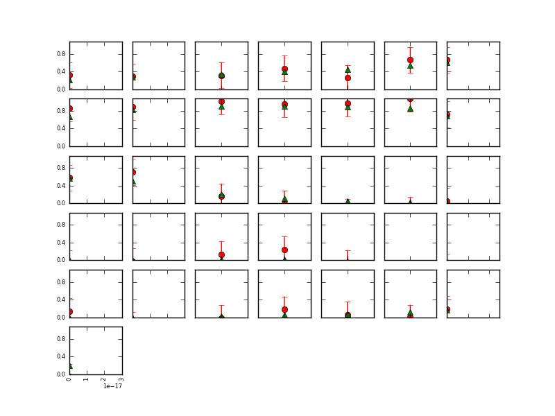A plot of the observations and modelled values as a function of location (the observations are the green dots) in output/Identity/NDVI_fwd.params.plot.y2.png:

and a plot of the x state vector associated with this operator (NDVI here).
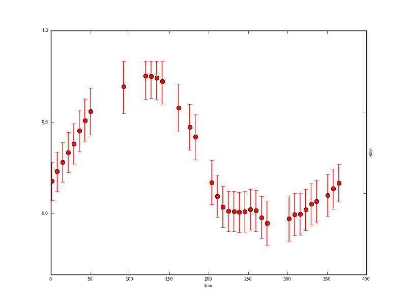Example plotting data from the output files¶
The above plots are automatically generated by eoldas provided general.doplot is True but these are intended as quicklooks, and users are likely to want to form their own plots.
<<<<<<< HEADAn example of this is implemented in example1plot.py:
======= <<<<<<< HEADAn example of this is implemented in example1plot.py:
=======An example of this is implemented in example1plot.py:
>>>>>>> ce76b11e7d7c668d4c215d915da12acce164f84b >>>>>>> 3a432b04f6092097d0eb5bd053d645c54dd0114e#!/usr/bin/env python
import numpy as np
import pylab as plt
#
# Some plotting of the synthetic and retrieved data
# generate the clean data
doys = np.arange ( 1, 365+1, 1)
ndvi_clean = np.clip(np.sin((doys-1)/72.), 0,1)
# read the state file
state = open('output/Identity/NDVI_Identity.params').readlines()
sdata = np.array([np.array(i.split()).astype(float) for i in state[1:]])
sNdvi = sdata[:,2]
sdNdvi = sdata[:,4]
# noisy sample data
noisy = open('output/Identity/NDVI_fwd.params_orig').readlines()
ndata = np.array([np.array(i.split()).astype(float) for i in noisy[1:]])
nNdvi = ndata[:,2]
sdnNdvi = ndata[:,3]
ndoys = ndata[:,0]
# retrieved
plt.fill_between(doys,y1=sNdvi-1.96*sdNdvi,y2=sNdvi+1.96*sdNdvi,facecolor='0.8')
p1 = plt.plot(doys,sNdvi,'r')
# original
p2 = plt.plot(doys,ndvi_clean,'g')
# samples used
p3 = plt.errorbar(ndoys,nNdvi,yerr=sdnNdvi*1.96,fmt='bo')
plt.legend([p2,p3,p1],['Original state','Sampled noisy state','Retrieved state'])
#plt.show()
plt.savefig('images/example1plot.png')

We can see that smoothers of this sort have some difficulty maintaining sudden changes, although this is quite challenging here given the level of noise amd the rather large data gaps.
More importantly, we have used the smoother to interpolate over the missing observations and to reduce uncertainty.
If we inspect the file output/Identity/NDVI_Identity.params <output/Identity/NDVI_Identity.params>:
#PARAMETERS time gamma_time NDVI sd-gamma_time sd-NDVI
1.000000 42.912561 0.211816 0.000000 0.063006
2.000000 42.912561 0.220854 0.000000 0.064164
3.000000 42.912561 0.229893 0.000000 0.065042
4.000000 42.912561 0.238931 0.000000 0.065651
5.000000 42.912561 0.247970 0.000000 0.066000
6.000000 42.912561 0.257008 0.000000 0.066092
7.000000 42.912561 0.266046 0.000000 0.065928
8.000000 42.912561 0.275085 0.000000 0.065507
9.000000 42.912561 0.283853 0.000000 0.066408
alongside the original data output/Identity/NDVI_fwd.params_orig <output/Identity/NDVI_Identity.params>:
#PARAMETERS time mask NDVI sd-NDVI
1.000000 1.000000 0.315700 0.150000
8.000000 1.000000 0.286300 0.150000
15.000000 1.000000 0.313996 0.150000
22.000000 1.000000 0.470529 0.150000
29.000000 1.000000 0.253425 0.150000
36.000000 1.000000 0.660812 0.150000
43.000000 1.000000 0.661460 0.150000
50.000000 1.000000 0.856904 0.150000
92.000000 1.000000 0.894455 0.150000
We note that the original state here (green line) lies entirely within the 95% CI. The error reduction has been of the order of 2.2 (compare sd-NDVI after the DA with that prior to it). We can see that the uncertainty at the datapoints has been reduced from 0.15 (that of the input data) to typically around 0.065. This grows slightly (to around 0.10) when the data gaps are large.
The impact of ‘filtering’ in this way (optimising a fit of the model to the observations) is to smooth the data and reduce uncertainty in the output. The reduction in uncertainty is related to the amount of smoothing that we apply. The second effect is to interpolate between observations, with uncertainty growing where we have no observations.
You might try changing the value of gamma used and seeing the effect on the results.
We could do this by modifying a few lines of solve_eoldas_identity.py to produce solve_eoldas_identity1.py:
if __name__ == "__main__":
import sys,tempfile
this = sys.argv[0]
import eoldas
# SD of noise
noise=0.15
# nominal sampling period
n_per=7
# proportion of missing samples
obs_off=0.33
# order of differential model (integer)
model_order=1
# sgwindow is larger to create larger data gaps
sgwindow=10
# set up data for this experiment
file, ideal_gamma,doys,ndvi_clean,ndvi,qa_flag = \
prepare(noise=noise,n_per=n_per,\
obs_off=obs_off,model_order=model_order,\
sgwindow=sgwindow)
# set gamma to less than the the theoretical value
gamma = ideal_gamma*0.45
# set op file names
xfile = 'output/Identity/NDVI_Identity1.params'
yfile = 'output/Identity/NDVI_fwd1.params'
# initialise optuions for DA overriding any in config files
which writes out to output/Identity/NDVI_Identity1.params and output/Identity/NDVI_fwd1.params and has a gamma value that is 0.45/0.33 of that previously used.
Now, plotting this using example1plot1.py:
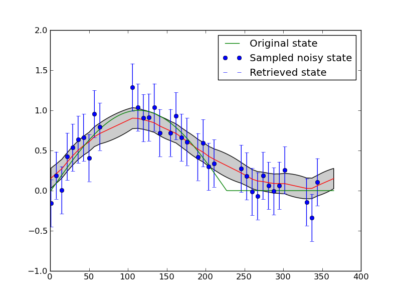This is possibly a better result, but in fact what we see is further limitation of the model that we have chosen here: we enforce wraparound (i.e. the NDVI at day 1 is expected to be the same as at day 365) and we enforce smoothness (so as we increase the gamma, the smoothness, we over-smooth at the sudden change that occurs half way through the year).
We could remove the wraparound condition, but in practice, it is better simply to weaken this constraint. We have done this in solve_eoldas_identity2.py:
if __name__ == "__main__":
import sys,tempfile
this = sys.argv[0]
import eoldas
# SD of noise
noise=0.15
# nominal sampling period
n_per=7
# proportion of missing samples
obs_off=0.33
# order of differential model (integer)
model_order=1
# sgwindow is larger to create larger data gaps
sgwindow=10
# set up data for this experiment
file, ideal_gamma,doys,ndvi_clean,ndvi,qa_flag = \
prepare(noise=noise,n_per=n_per,\
obs_off=obs_off,model_order=model_order,\
sgwindow=sgwindow)
# set gamma to less than the the theoretical value
gamma = ideal_gamma*0.33
# set op file names
xfile = 'output/Identity/NDVI_Identity2.params'
yfile = 'output/Identity/NDVI_fwd2.params'
# initialise optuions for DA overriding any in config files
cmd = 'eoldas ' + \
' --conf=config_files/eoldas_config.conf --conf=config_files/Identity.conf ' + \
' --logfile=mylogs/Identity.log ' + \
' --calc_posterior_unc ' + \
' --parameter.solve=0,1 ' + \
' --parameter.result.filename=%s '%xfile +\
' --parameter.x.default=%f,0.0 '%(gamma) + \
which write out to output/Identity/NDVI_Identity2.params and output/Identity/NDVI_fwd2.params and has the same (higher) gamma value used above.
Now, plotting this using example1plot2.py:

If you re-run these scripts several times, so that you see different configurations for the temporal sampling, you will notice that the interpolation sometimes behaves well over the entire dataset (for some given gamma) and sometimes doesn’t. For example:
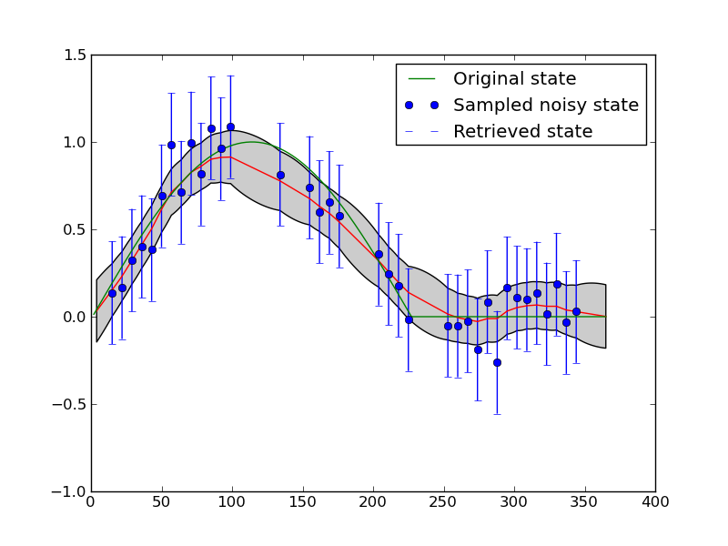Interfacing a little more deeply with the eoldas code¶
Whilst considering writing wrapper codes around eoldas functionality and outputs it is instructive to explore some of the data structure available.
We can re-use the example solve_eoldas_identity.py developed above <<<<<<< HEAD and access some of the data structure as shown in solve_eoldas_identity_a.py.
======= <<<<<<< HEAD and access some of the data structure as shown in solve_eoldas_identity_a.py. ======= and access some of the data structure as shown in solve_eoldas_identity_a.py. >>>>>>> ce76b11e7d7c668d4c215d915da12acce164f84b >>>>>>> 3a432b04f6092097d0eb5bd053d645c54dd0114e#!/usr/bin/env python
import pdb
import numpy as np
if __name__ == "__main__":
import sys,tempfile
this = sys.argv[0]
import eoldas
from solve_eoldas_identity import *
# import the setup methods from solve_eoldas_identity
import pylab as plt
# SD of noise
noise=0.15
# nominal sampling period
n_per=7
# proportion of missing samples
obs_off=0.33
# order of differential model (integer)
model_order=1
# sgwindow is larger to create larger data gaps
sgwindow=10
# set up data for this experiment
file, ideal_gamma,doys,ndvi_clean,ndvi,qa_flag = \
prepare(noise=noise,n_per=n_per,\
obs_off=obs_off,model_order=model_order,\
sgwindow=sgwindow)
# set gamma to thge theoretical value
gamma = ideal_gamma
# set op file names
xfile = 'output/Identity/NDVI_Identity_a.params'
yfile = 'output/Identity/NDVI_fwd_a.params'
# initialise options for DA overriding any in config files
# make sure we use some different output file names to othe scripts
cmd = 'eoldas ' + \
' --conf=config_files/eoldas_config.conf --conf=config_files/Identity.conf ' + \
' --logfile=mylogs/Identity.log ' + \
' --calc_posterior_unc ' + \
' --parameter.solve=0,1 ' + \
' --parameter.result.filename=%s '%xfile +\
' --parameter.x.default=%f,0.0 '%(gamma) + \
' --operator.obs.y.result.filename=%s'%yfile +\
' --operator.obs.y.state=%s'%file+\
' --operator.modelt.rt_model.model_order=%d '%model_order
# initialise eoldas
self = eoldas.eoldas(cmd)
# solve DA
self.solve(write=True)
# now pull some data out of the eoldas
# the 'root' of the DA data structure is in self.solver.root
root = self.solver.root
# The state vector data are stored in root.x
# with ancillary information in root.x_meta
# so the state vector is e.g. in root.x.state
# and the names are in root.x_meta.state
state_names = root.x_meta.state
state = root.x.state
# The sd representation of the posterior is in root.x.sd
# This is all set up in eoldas_Solver.py
# All storage is of type ParamStorage, an extended
# dictionary structure. You can explore it interactively
# with e.g. root.dict().keys() or self.keys() since
# self here is a straight dictionary
sd = root.x.sd
# The full inverse Hessian is in self.solver.Ihessian
Ihessian = self.solver.Ihessian
# A mask to reduce this to only the state variables
# being targeted (solve == 1) is through a call to:
NDVI_Ihessian = self.solver.unloader(None,Ihessian,M=True)
# This is of shape (365,365) here.
# so now lets produce an image of it
# to visualise the structure
fig = plt.figure()
ax = fig.add_subplot(111)
cax = ax.imshow(NDVI_Ihessian,interpolation='nearest')
ax.set_title('Posterior Uncertainty matrix for NDVI')
# Add colorbar, make sure to specify
# tick locations to match desired ticklabels
cbar = fig.colorbar(cax) #), ticks=[-1, 0, 1])
#cbar.ax.set_yticklabels(['< -1', '0', '> 1'])# vertically oriented colorbar
# see http://matplotlib.sourceforge.net/plot_directive/mpl_examples/pylab_examples/colorbar_tick_labelling_demo.py
# save it
plt.savefig('output/IHessianNDVI_expt1.png')
The comments in the code should be self explanatory and anyone interested in delving much further into the eoldas codes should see the full class documentation. Here, we can see at least how to access the posterior estimate of the state and its uncertainty. We write out the uncertainty to an image using matplotlib (pylab):
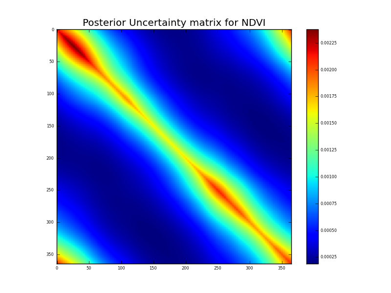Now, this is a very interesting figure for understanding how these multiple constraints are interacting. The observation uncertainty is just described by standard deviation, so lies along the leading diagonal of the a priori uncertainty. Further, it only exists where there are data points. The impact of applying the (regularisation) model constraint is to reduce the uncertainty at the observation points as we would expect. We can see a ‘sausage’ pattern from above in this figure quite clearly. The ‘pinch points’ are when the sample points are dense. Where there are large data gaps (from our simulated cloud impacts here) the uncertainty is higher, but it is ‘spread out’ from the leading diagonal by applying temporal covariance. The impact of the filtering is large where the observation impact is low (or non existant). We will see these same effects in many DA experiments.
Running EOLDAS from the command line¶
An alternative to writing your own python code for the front end is to use eoldas.py, which can be direcly run from the command line.
Help on command line options is available by typing::
eoldas_run.py --help
As an aid to setting up the correct python variables etc, a front end script, eoldas can also be accessed (in the bin directory).
eoldas_run.py --conf=confs/Identity.conf
N.B. Make sure the eoldas_run.py script is in your path. If you install the python packages for a single user, in UNIX it will usually be under ~/.local/bin/. You may want to add that path to your users’ path.
Application to MODIS reflectance data¶
We can now apply the concepts demonstrated above to real EO data from the MODIS sensors.
This is actually quite trivial to achieve as it involves the same basic configuration file as previously. This time, we will access it from eoldas_run.py.
The MODIS data file format¶
An example data file then is data/modis_botswana.dat which is MODIS reflectance data for a site in Botswana. The format of this file is ‘BRDF’, which looks like:
BRDF 67 7 645 858.5 469 555 1240 1640 2130 0.003 0.004 0.004 0.015 0.013 0.01 0.006
181 1 62.830002 -83.040001 37.910000 23.219999 0.032900 0.068600 0.018000 0.028400 0.098100 0.097600 0.081900
182 1 33.980000 99.540001 44.970001 39.290001 0.050500 0.091800 0.030000 0.045300 0.123200 0.137100 0.124800
184 1 51.660000 99.300003 46.889999 42.349998 0.056200 0.106000 0.029500 0.053800 0.151600 0.154600 0.141400
185 1 32.880001 -81.900002 40.540001 31.510000 0.039200 0.069600 0.022900 0.034400 0.089800 0.102500 0.092800
186 1 63.049999 100.470001 48.910000 45.169998 0.058200 0.138600 0.038900 0.055200 0.184600 0.183800 0.143100
187 1 6.430000 -79.459999 42.090000 35.259998 0.043700 0.074600 0.026400 0.038700 0.103100 0.118400 0.103600
189 1 22.389999 97.720001 43.790001 38.750000 0.044500 0.088400 0.027100 0.040200 0.129500 0.135800 0.127600
190 1 57.400002 -82.720001 38.029999 26.480000 0.050700 0.087700 0.024600 0.045200 0.119900 0.118000 0.098100
191 1 44.040001 99.419998 45.619999 41.990002 0.062800 0.107800 0.035600 0.057100 0.141600 0.154800 0.137600
192 1 42.689999 -82.820000 39.290001 30.719999 0.041300 0.078800 0.022700 0.036600 0.106400 0.109000 0.096100
193 1 58.139999 99.800003 47.560001 45.000000 0.063500 0.124200 0.034900 0.060800 0.169700 0.170900 0.143400
194 1 20.129999 -82.099998 40.730000 34.689999 0.038600 0.073200 0.024000 0.035100 0.106900 0.111700 0.105200
196 1 8.940000 96.330002 42.330002 38.389999 0.052200 0.090000 0.030300 0.047200 0.118400 0.131700 0.123100
197 1 62.480000 -83.120003 36.610001 25.559999 0.053800 0.092700 0.025000 0.049200 0.118100 0.120200 0.093200
198 1 34.730000 99.230003 44.060001 41.840000 0.054500 0.103800 0.030300 0.051400 0.144800 0.147200 0.133300
199 1 50.549999 -82.849998 37.750000 30.030001 0.044100 0.082200 0.025500 0.041300 0.104800 0.114500 0.093900
200 1 52.070000 100.010002 45.910000 45.029999 0.074300 0.132000 0.037400 0.069800 0.174200 0.169700 0.143300
201 1 32.130001 -82.889999 39.080002 34.240002 0.041500 0.077000 0.026200 0.038900 0.071200 0.108400 0.096300
202 1 63.400002 100.080002 47.880001 48.009998 0.082600 0.155400 0.043600 0.073800 0.191000 0.187000 0.137200
203 1 5.270000 -76.970001 40.590000 38.189999 0.053000 0.092500 0.026800 0.047500 0.122900 0.121400 0.109300
205 1 23.219999 97.779999 42.220001 41.840000 0.067000 0.113900 0.034600 0.060000 0.143100 0.148500 0.131800
206 1 56.959999 -83.139999 35.910000 29.340000 0.065800 0.102000 0.033800 0.062000 0.117800 0.113800 0.087400
The first line is a header, as with the previous ‘PARAMETERS’ format we saw. The first word on the header must be BRDF (a # can be included for compatitbilty with some other formats).
The second item on the header line is the number of samples in the file (92 here). The third item is the number of wavebands represented (7 here) then this is followed by wavelengths, wavebands, or waveband identifiers.
If a single float number is given, it is assumed to represent a narrow waveband centred around that wavelength. Wavelength is assumed to be in nm. If it is two float numbers connected by a dash (e.g. 45-550) then it is taken to be a tophat function representation of a waveband, where the two number represent the minimum and maximum wavelength respectively. If some other code is found (e.g. B2), it is assumed to be a tag associated with a particular waveband. In this case, any spectral libraries loaded in the configuration files are searched to see if they contain a definition of this waveband. If nothing is found and it cannot be interpreted as a number, it is assigned an arbitrary wavelength (index starting from 0) and should not be interpreted as a wavelength identifier.
The 7 columns following the wavebands specify the standard deviation in the reflectance data. All subsequent lines contain reflectance, as a function of ‘locational’, ‘control’ and spectral information. The first column here defines location (time), columns 2 to 6 are ‘control’ variables: things the observation waries as a function of that are not spectral or locational. In this case, they are (all angles are in degrees):
# a data mask (1 for good), # view zenith angle, # view azimuth angle, # solar zenith angle, # solar azimuth angle.
The final 7 columns give the reflectance in the 7 wavebands for each location defined.
The data span days of year 181 to 272 inclusive. There is a lot of day to day variation in the data, but a clear underlying trend in the Near infrared. We will set ourselves the task of trying to use eoldas to filter the dataset so that the trend becomes more apparent. We will also try to extrapolate from the sample days to the whole year (which is clearly quite a challenge, but instructive for understanding uncertainty).
We will apply the same data assimilation components as previously, i.e. an Identity operator for the NIR reflectance (in other words, we take the reflectance as a prior estimate of what we wish to estimate) and a regularisation filter implemented as a constraint on first order derivatives at lag one day. We will suppose that we know the uncertainty in this model (the temporal constraint) to be expressed as a standard deviation of .002 (1/500), i.e. the root mean squared deviation from one day to the next is expected to be around .002. An examination of the dataset will show that the NIR reflectance roughly increases from around 0.1 to 0.2 over about 100 days, so we could use a gamma value of 1000. However, we don’t want to impose that constraint too strongly, so we will instead use a gamma of 500. We are not trying to fit a trendline here, just to smooth the dataset so that we can detect the underlying behaviour. The result should however not be very sensitive to this guess and can always be explored using approaches such as cross validation.
The configuration file¶
We have a configuration file set up in config_files/Identity2.conf. This provides a full description of the problem we wish to solve, which is to reduce noise in the NIR observation series.
# An EOLDAS configuration file for
# a simple Identity operator and a regulariser
[parameter]
location = ['time']
limits = [[1,365,1]]
help_limits="define the limits for the required locational information"
names = "gamma_time 858.5".split()
solve = 0,1
datatypes = x
[parameter.result]
filename = output/Identity/MODIS_botswana.params
format = 'PARAMETERS'
help_filename='Set the output state filename'
[parameter.x]
datatype = x
names = $parameter.names
default = 500,0.1
state= data/modis_botswana.dat
help_default="Set the default values of the states"
apply_grid = True
sd = [1.]*len($parameter.names)
bounds = [[0.000001,1000000],[0,1]]
[general]
doplot=True
help_do_plot='do plotting'
calc_posterior_unc=False
[operator]
modelt.name=DModel_Operator
modelt.datatypes = x
obs.name=Operator
obs.datatypes = x,y
[operator.modelt.x]
names = $parameter.names
sd = [1.0]*len($operator.modelt.x.names)
datatype = x
[operator.modelt.rt_model]
model_order=1
help_model_order='The differential model order'
wraparound=periodic,365
#wraparound=None
[operator.obs.x]
names = $parameter.names[1:]
sd = [1.0]*len($operator.obs.x.names)
help_sd='Set the observation sd'
datatype = x
[operator.obs.y]
control = [mask,vza,vaa,sza,saa]
names = $parameter.names[1:]
sd = [0.015]*len($operator.obs.x.names)
#help_sd="set the sd for the observations"
datatype = y
state = data/modis_botswana.dat
help_state = "Set the y state vector"
[operator.obs.y.result]
filename = output/Identity/Botswana_fwd.params
format = 'PARAMETERS'
help_filename = 'Set the fwd modelling result filename'
In this, we can see the required location field defined in the [parameters] section (i.e. parameters.location=[[1,365,1]]). The control variables are associated with the observation operator, here given as [mask,vza,vaa,sza,saa].
To run eoldas with this configuration then all we need do is type:
eoldas_run.py --conf=config_files/eoldas_config.conf \
--conf=config_files/Identity2.conf --calc_posterior_unc
This writes the files:
output/Identity/MODIS_botswana.params: state estimation (smoothed reflectance)
181.000000 1.000000 500.000000 0.095014 0.000000 0.005513
182.000000 1.000000 500.000000 0.095247 0.000000 0.005255
183.000000 1.000000 500.000000 0.095541 0.000000 0.005063
184.000000 1.000000 500.000000 0.095835 0.000000 0.004840
185.000000 1.000000 500.000000 0.095949 0.000000 0.004669
186.000000 1.000000 500.000000 0.096530 0.000000 0.004541
187.000000 1.000000 500.000000 0.096364 0.000000 0.004451
188.000000 1.000000 500.000000 0.096585 0.000000 0.004396
189.000000 1.000000 500.000000 0.096806 0.000000 0.004293
190.000000 1.000000 500.000000 0.097176 0.000000 0.004216
191.000000 1.000000 500.000000 0.097714 0.000000 0.004161
output/Identity/Botswana_fwd.params: forward modelling of y
#PARAMETERS time mask,vza,vaa,sza,saa 858.5 sd-858.5
181.000000 0.000000 0.095014 0.000000
182.000000 0.000000 0.095247 0.000000
184.000000 0.000000 0.095835 0.000000
185.000000 0.000000 0.095949 0.000000
186.000000 0.000000 0.096530 0.000000
187.000000 0.000000 0.096364 0.000000
189.000000 0.000000 0.096806 0.000000
190.000000 0.000000 0.097176 0.000000
191.000000 0.000000 0.097714 0.000000
as well as the orignal data in output/Identity/Botswana_fwd.params_orig
#PARAMETERS time mask,vza,vaa,sza,saa 858.5 sd-858.5
181.000000 0.000000 0.068600 0.015000
182.000000 0.000000 0.091800 0.015000
184.000000 0.000000 0.106000 0.015000
185.000000 0.000000 0.069600 0.015000
186.000000 0.000000 0.138600 0.015000
187.000000 0.000000 0.074600 0.015000
189.000000 0.000000 0.088400 0.015000
190.000000 0.000000 0.087700 0.015000
191.000000 0.000000 0.107800 0.015000
with appropriate graphics for the state:

and the y data:
 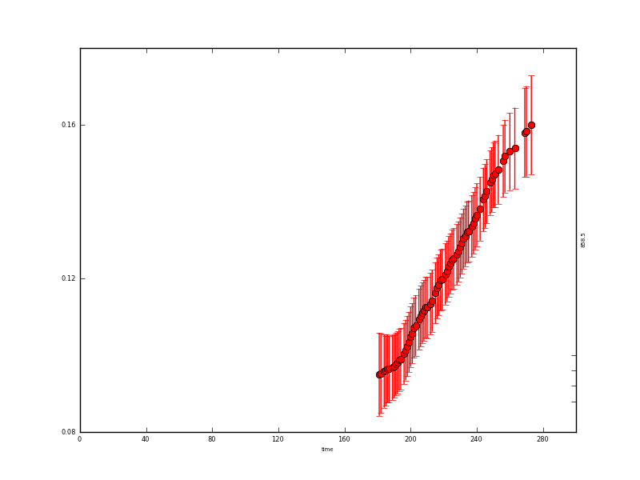
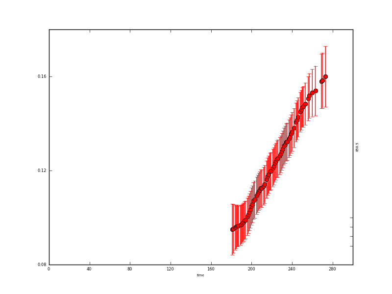
The resultant state data are quite instructive: where we have observations, the uncertainty is reduced from 0.015 to around 0.004 (the actual degree of noise reduction depends on the value of gamma used). Where there are no data, the uncertainty grows to around 0.017. It is slightly reduced at the year start/end because of the wrparound condition used here.
In this case, we have used a first order differential constraint with a periodic boundary condition. These are quite important in this case: we only have observations in a limited time window, so using a periodic boundary condition is one way to place some form of constraint at what happens when we have no data. The first order differential model will in essence perform a linear interpolation where there are no data, which is probably appropriate for this case. You can try changing the model order to see what happens. Run e.g.:
eoldas_run.py --conf=config_files/eoldas_config.conf \
--conf=config_files/Identity2.conf --calc_posterior_unc \
--operator.modelt.rt_model.model_order=2 \
--parameter.x.default=5000,0.1 \
--operator.obs.y.result.filename=output/Identity/Botswana_fwd.params2 \
--parameter.result.filename=output/Identity/MODIS_botswana.params2
and have a look at output/Identity/MODIS_botswana.params2.plot.x.png:
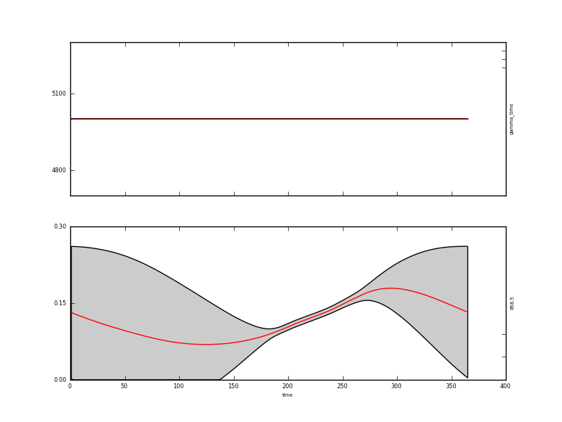The assumed behaviour is quite different to the first order differential constraint outside of the observations. With a high value of gamma, the result is essentially a straight line where there are observations. The influence of the wraparound condition is also clear here.
If we used a lower gamma, we would see some features of using a second order model:
eoldas_run.py --conf=config_files/eoldas_config.conf \
--conf=config_files/Identity2.conf --calc_posterior_unc \
--operator.modelt.rt_model.model_order=2 \
--parameter.x.default=200,0.1 \
--operator.obs.y.result.filename=output/Identity/Botswana_fwd.params3 \
--parameter.result.filename=output/Identity/MODIS_botswana.params3
Where there are observations, the second order difference constraint would have high frequency oscillations. This can be a positive feature or an annoyance: it all depends on how you expect the function to behave. It is not an arbitrary choice: the user has imposed a particular expectation of behaviour here through the model. There clearly needs to be some evidence for choosing one form of model over another, although that is not always straightforward.
One other interesting feature of this result is that the mean estimate is bounded (0.0,1.0) which is reasonable for reflectance data (theoretically, BRF can go above 1, but this is rarely observed). This means that the mean value (the red line) is forced to stay above 0 (days 100 to 150) even though the apparent trend from the observations might otherwise make it go below zero. This condition is imposed in the configuration by the line:
bounds = [[0.000001,1000000],[0,1]]
One further thing to note about this result is that when the uncertainty is so large (as is the case here when we are extrapolating) that the confidence interval spans more than the entire data range (0,1) the mean and standard deviation described in the Gaussian statistics are a little meaningless or at least should be interpreted with caution. It might in this case be better to describe the data (in the extrapolated region) as simply being somewhere between the physical limits.
A final comment is that actually, a large amount of the departure of the signal from our smooth trajectory, the high frequency variation that we have treated as noise here, can most likely be described by considering the physics os scattering by the surface (there are, on the whole, BRDF effects). We will return to this later.
As well as raising a few issues with regard to model selection, we have demonstrated further use of the eoldas command line for quickly changing some terms in an experiment. However, it is all very well in showing that eoldas can ingest satellite data and apply constraints to provide an estimate of state variables, but the state variables here (reflectance) do not directly help us monitor the properties of the land surface or link to process models.
To do that using EO data, we generally need more complex obeseravtion operators. These are dealt with in the next section.